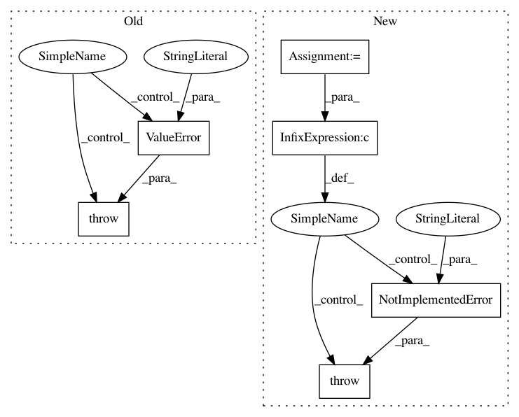

13dc44654ba763bde1aeb38d0d4f40787a2f4456,smac/runhistory/runhistory2epm.py,RunHistory2EPM,__init__,#RunHistory2EPM#Any#Any#Any#Any#Any#Any#Any#,35
Before Change
raise ValueError("impute_cencored data, but no imputor given")
elif impute_censored_data and not isinstance(self.imputor,
smac.epm.base_imputor):
raise ValueError("Given imputor is not an instance of "
"smac.epm.base_imputor")
else:
// Everything is fine
pass
After Change
// Sanity checks
// TODO: Decide whether we need this
if impute_censored_data and scenario.run_obj != "runtime":
// So far we don"t know how to handle censored quality data
self.logger.critical("Cannot impute censored data when optimizing "
"runtime")
raise NotImplementedError("Cannot impute censored data when "
"optimizing runtime")
// Check imputor stuff
if impute_censored_data and self.imputor is None:
self.logger.critical("You want me to impute cencored data, but "
In pattern: SUPERPATTERN
Frequency: 3
Non-data size: 6
Instances
Project Name: automl/SMAC3
Commit Name: 13dc44654ba763bde1aeb38d0d4f40787a2f4456
Time: 2016-03-02
Author: eggenspk@informatik.uni-freiburg.de
File Name: smac/runhistory/runhistory2epm.py
Class Name: RunHistory2EPM
Method Name: __init__
Project Name: rodluger/starry
Commit Name: 9b1c2e0335d9643ac598ed1615021331a07b76a5
Time: 2019-04-04
Author: rodluger@gmail.com
File Name: starry/map/map.py
Class Name:
Method Name: Map
Project Name: dask/dask-ml
Commit Name: 0cd9a03d76b9bb6a91fee3126fb4b102e4fdedc6
Time: 2018-06-25
Author: jrbourbeau@users.noreply.github.com
File Name: dask_ml/metrics/classification.py
Class Name:
Method Name: accuracy_score